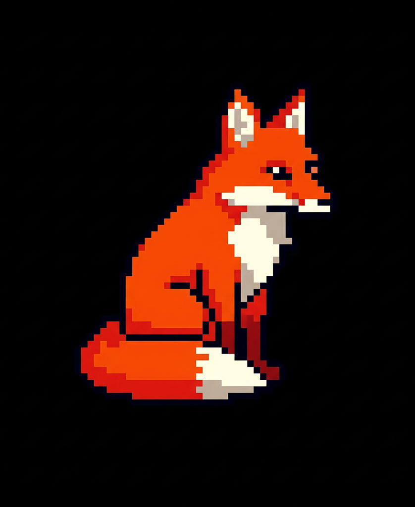
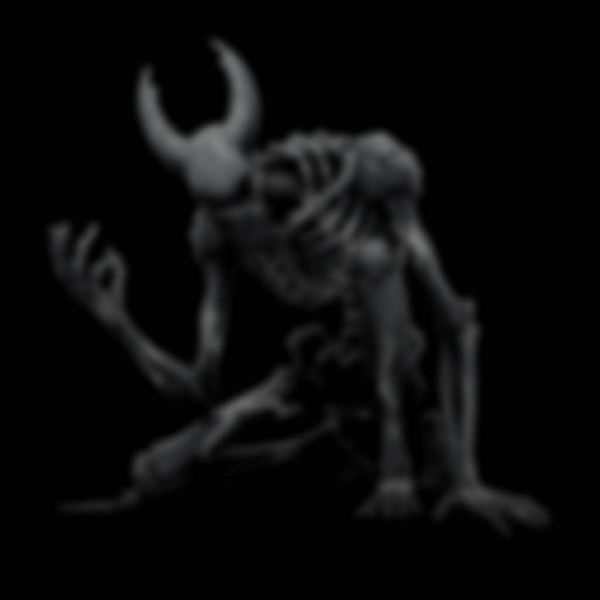

História e Conteúdo
Descubra a jornada de Osvaldo e os desafios que o aguardam no abismo.
Osvaldo nunca foi o que se pode chamar de sortudo. Se havia uma poça de lama na calçada, ele a encontrava. Sua vida era uma comédia de pequenos desastres, mas ele levava tudo com um suspiro e um sorriso de canto a canto.
Certo dia, ele ouviu falar de uma caverna nos arredores da cidade, famosa por suas trilhas fáceis e formações de estalactites e feixes de luz. Buscando uma aventura simples, algo que (pela primeira vez) não desse errado, ele pegou seu celular para ouvir musica e decidiu explorar por conta própria.
Mas a sorte de Osvaldo, como sempre, tinha outros planos. Um buraco mal sinalizado, uma escorregada boba e um barulho de pedras caindo foram o suficiente. Quando percebeu, ele teve que admitir que estava completamente perdido.
Agora, a caverna, ou abismo em que caiu, não é mais um ponto turístico, mas um labirinto escuro e hostil. Ele precisa enfrentar não apenas os perigos óbvios, como estalactites, espinhos e passagens perigosas, mas também a sensação de que a própria caverna está contra ele.
Será que sua lendária má sorte será seu fim? Ou será que, no lugar mais improvável, ele finalmente encontrará a saída?

Osvaldo
A jornada começa com uma queda. O mundo ao redor é sombrio, formado por estalactites e estruturas antigas que parecem desmoronar.
O único som que preenche o vazio é sua musica tocando no celular. Fósseis antigos abandonados pelas paredes, sem olhos, sem rostos, apenas silhuetas borradas pela distância.
Aqui, os desafios são reais: plataformas pequenas, saltos exigem precisão, e cada erro pode custar sua vida.
Aos poucos, ele percebe que o abismo diante dele não é apenas físico, é um reflexo do estado de abandono daquele local.

Fóssil
Continue Explorando
Agora que você conhece a história, descubra as mecânicas que tornam essa jornada possível.